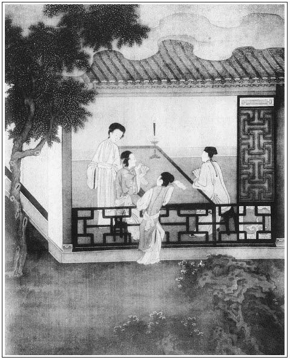

張回此回總寫金蓮之妒之淫之邪，乃夾一李桂姐、王三官之事，又夾一王姑子、薛姑子之事，便使一片邪淫世界，十分滿足。又見金蓮之行，實伯仲桂姐，而二尼之淫，又深罪月娘也。
此回章法，全是相映。如品玉之先，金蓮起身來，為月娘所譏；後文鬥葉之先，金蓮起身又為月娘所譏是也。品玉時，以春梅代脫衣始，以春梅代穿衣結；斗葉子，以瓶兒同出儀門始，以同瓶兒回房結；又是兩兩相映。黃、安二主事來拜是實，宋御史送禮是虛，又兩兩相映也。
此書至五十回以後，便一節節冷了去。今看他此回，先把後五十回冷局的大頭緒一一題清。如開首金蓮兩舌，伏後文官哥、瓶兒之死；李三、黃四諄諄借帳，伏後文賴帳之由；李桂姐伏王三官、林太太；來保、王六兒飲酒一段，伏後文二人結親，拐財背主之故；郁大姐伏申二姐；品玉伏西門之死；而斗葉子伏敬濟之飄零；二尼講經，伏孝哥之幻化。蓋此一回，又後五十回之樞扭也。
梵僧為諸淫婦而現身，乃王六兒先試，瓶兒次之，金蓮又次之，玉樓、月娘又次之。然則春梅獨遺寵愛乎？不知於金蓮未試之先，已先寫了春梅也。夫必寫梵僧者，非此不能死西門也。必寫金、瓶、梅之試之者，所以極其惡也。而王六兒獨佔頭籌者，又為貪慾喪命地也。
桂姐必寫其私接王三官，所以刺西門之愚也。必寫為之東京求情，蓋為上壽之引線也。夫東京上壽，必用桂姐引者，所以點明桂姐一段公案也。何則？蓋桂姐，西門、月娘之干女也。作者本意寫一趨炎認女之桂姐，蓋特特為趨炎認子之人寫照也。趨炎認子，西門之於蔡京，固此類也。以類引類，必用桂姐，而為女為子之間，亦大可恥矣。況乎王三官，又西門後日之假子也。以三官之假子，配桂姐之干女，又假兄妹干手足也。乃假子終奸干父之干女而不知悔，干父且奸干子之親娘而不知非，身以淫娼浪子為假子女而不羞，已且辱身敗行，又假子於人，而恐不得。其狗彘之行，臭味本自相投，故此回必寫桂姐，為下文東京假子之引，而上文必寫桂姐之趨炎認女也。
上一回寫瓶兒試藥，為後文病源，此文又能於百忙中金蓮品玉內寫一打貓，為官哥死案。文字精細之針線如此。
寫一薛姑子，見得雪月落於空寂，而又一片冷局才動頭也。
詩曰：
羞看鸞鏡惜朱顏，手托香腮懶去眠。
瘦損纖腰寬翠帶，淚流粉面落金鈿。
薄倖惱人愁切切，芳心繚亂恨綿綿。
何時借得東風便，刮得檀郎到枕邊。

話說潘金蓮見西門慶拿了淫器包兒，與李瓶兒歇了，足惱了一夜沒睡，繡旁此妒婦之苦。懷恨在心。到第二日，打聽西門慶往衙門裡去了，老早走到後邊對月娘說：「李瓶兒背地好不說姐姐哩！說姐姐會那等虔婆勢，喬坐衙，別人生日，又要來管。『你漢子吃醉了進我屋裡來，我又不曾在前邊，平白對著人羞我，望著我丟臉兒。交我惱了，走到前邊，把他爹趕到後邊來。落後他怎的也不在後邊，還到我房裡來了？我兩個黑夜說了一夜梯己話兒，張旁金蓮想當然。只有心腸五臟沒曾倒與我罷了。』」繡眉金蓮學瓶兒之言，妙在心思、口角仍是金蓮之言，若平心聽之，原不難辨，但恨聽言者觸於怒而不暇矣。張夾死蕙蓮舊技量，固知寫蕙蓮為瓶兒前車。這月娘聽了，如何不惱！因向大妗子、孟玉樓說：「你們昨日都在跟前看著，張夾一語已得全神。我又沒曾說他甚麼。小廝交燈籠進來，我只問了一聲：『你爹怎的不進來？』小廝倒說：『往六娘屋裡去了。』我便說：『你二娘這裡等著，恁沒槽道，卻不進來！』論起來也不傷他，怎的說我虔婆勢，喬坐衙？我還把他當好人看成，原來知人知面不知心，那裡看人去？張夾所以讒言可畏。乾淨是個綿裡針、肉裡刺的貨，還不知背地在漢子跟前架甚麼舌兒哩！繡眉從認瓶兒為好人中，推勘其不好處，直寫出月娘信讒，一時之轉念，妙不容言。張旁月娘想當然。怪道他昨日決烈的就往前走了。張旁疑心如此。傻姐姐，那怕漢子成日在你屋裡不出門，不想我這心動一動兒。繡旁說不動正是動處。一個漢子丟與你們，張旁可以「兩個」乎？一笑。隨你們去，守寡的不過。張夾又何嘗放過金蓮。想著一娶來之時，賊強人和我門裡門外不相逢，那等怎的過來？」繡旁觸便想到，怨之難忘如此。張夾筆力直穿七札。大妗子在旁勸道：「姑娘罷麼，看孩兒的分上罷！自古宰相肚裡好行船。當家人是個惡水缸兒，好的也放在心裡，歹的也放在心裡。」張夾又對吳大舅好好先生之言。月娘道：「不拘幾時，我也要對這兩句話。張旁著。等我問他，我怎麼虔婆勢，喬做衙？」金蓮慌的沒口子說道：張夾讒人何難看。「姐姐寬恕他罷。張夾既如此，即不必學與月娘矣。知言又何難，在平心以聽之耳。常言大人不責小人過，那個小人沒罪過？繡眉語雖毒，未見太甚，轉生人之疑。他在背地挑唆漢子，俺們這幾個誰沒吃他排說過？張夾又挑玉樓。我和他緊隔著壁兒，要與他一般見識起來，倒了不成！行動只倚著孩兒降人，張夾心事不覺悟出。他還說的好話兒哩！說他的孩兒到明日長大了，有恩報恩，有仇報仇，俺們都是餓死的數兒張夾又是心事。──你還不知道哩！」吳大妗子道：「我的奶奶，那裡有此話說？」繡眉大妗子旁觀甚清。月娘一聲兒也沒言語。張旁太離，故月娘亦不信矣。
常言：路見不平，也有向燈向火。不想西門大姐平日與李瓶兒最好，常沒針線鞋面，李瓶兒不拘好綾羅緞帛就與他，張夾月娘可殺。好汗巾手帕兩三方背地與大姐，銀錢不消說。當日聽了此話，如何不告訴他。李瓶兒正在屋裡與孩子做端午戴的絨線符牌，及各色紗小粽子並解毒艾虎兒。繡旁好點綴。只見大姐走來，李瓶兒讓他坐，又交迎春：「拿茶與你大姑娘吃。」大姐道：「頭裡請你喫茶，你怎的不來？」李瓶兒道：「打發他爹出門，張旁映夜長。我趕早涼與孩子做這戴的碎生活兒來。」大姐道：「有樁事兒，我也不是舌頭，敢來告你說：你沒曾惱著五娘？他對著俺娘，如此這般說了你一篇是非──說你說俺娘虔婆勢，喬做衙。如今俺娘要和你對話哩！你別要說我對你說，交他怪我。張夾又是一個學舌者，可畏可畏。你須預備些話兒打發他。」這李瓶兒不聽便罷，聽了此言，手中拿著那針兒通拿不起來，兩隻胳膊都軟了，半日說不出話來，張旁病根伏此。對著大姐掉眼淚，說道：張夾幾千百斤氣力，方寫得出來。「大姑娘，我那裡有一字兒？昨晚我在後邊，聽見小廝說他爹往我這邊來了，我就來到前邊，催他往後邊去了。再誰說一句話兒來？你娘恁覷我一場，莫不我恁不識好歹，敢說這個話？設使我就說，對著誰說來？也有個下落。」大姐道：「他聽見俺娘說不拘幾時要對這話，他也就慌了。張夾旁觀者清。要是我，你兩個當面鑼對面鼓的對不是！」李瓶兒道：「我對的過他那嘴頭子？張夾瓶兒心事。只憑天罷了。他左右晝夜算計的只是俺娘兒兩個，到明日終久吃他算計了一個去，才是了當。」繡眉人情皆惜瓶兒不能辨，不知瓶兒正妙在不能辨而西門慶始憐之也。若然，則瓶兒智出金蓮上矣，非也。瓶兒性實愚不能辨，非能辨而有不辨之妙，所以往往受金蓮之累也。說畢哭了。張夾又是幾千百斤力氣，寫得此數句。大姐坐著勸了一回，只見小玉來請六娘、大姑娘吃飯。李瓶兒丟下針指，同大姐到後邊，也不曾吃飯，回來房中，倒在床上就睡著了。
西門慶衙門中來家，見他睡，問迎春。迎春道：「俺娘一日飯也還沒吃哩。」慌的西門慶向前問道：「你怎的不吃飯？你對我說。」又見他哭的眼紅紅的，只顧問：「你心裡怎麼的？對我說。」李瓶兒連忙起來，揉了揉眼說道：「我害眼疼，不怎的。今日心裡懶待吃飯。」並不題出一字兒來。張夾守口如瓶，蓋為有寵，不必爭耳。
正是：
滿懷心腹事，盡在不言中。
有詩為證：
莫道佳人總是癡，惺惺伶俐沒便宜。
只因會盡人間事，惹得閒愁滿肚皮。
大姐在後邊對月娘說：「才五娘說的話，我問六娘來。他好不賭身發咒，望著我哭，說娘這般看顧他，他肯說此話！」吳大妗子道：「我就不信。李大姐好個人兒，他怎肯說這等話！」張夾旁觀者清。月娘道：「想必兩個有些小節不足，哄不動漢子，走來後邊，沒的拿我墊舌根。我這裡還多著個影兒哩！」繡眉金蓮之讒，月娘此時已識破矣。猶曰兩個，可見讒人者雖輸亦只平交，亦何憚而不讒人哉！張夾一語已解。大妗子道：「大姑娘，今後你也別要虧了人。不是我背地說，潘五姐一百個不及他。為人心地兒又好，來了咱家恁二三年，要一些歪樣兒也沒有。」張夾盡出瓶兒。
正說著，只見琴童兒背進個藍布大包袱來。月娘問是甚麼，琴童道：「是三萬鹽引。韓夥計和崔本才從關上掛了號來，爹說打發飯與他二人吃，如今兌銀子打包。後日二十，是個好日子，起身，打發他三個往揚州去。」吳大妗子道：「只怕姐夫進來。我和二位師父往他二娘房裡坐去罷。」剛說未畢，只見西門慶掀簾子進來，慌的吳妗子和薛姑子、王姑子往李嬌兒房裡走不迭。早被西門慶看見，問月娘：「那個是薛姑子？賊胖禿淫婦，來我這裡做甚麼！」張夾非正人語，非提刑體。月娘道：「你好恁枉口撥舌，不當家化化的，罵他怎的？他惹著你來？你怎的知道他姓薛？」西門慶道：「你還不知他弄的乾坤兒哩！他把陳參政的小姐吊在地藏庵兒裡和一個小伙偷奸，張旁明知而容其來家，其愚為何如？他知情，受了三兩銀子。事發，拿到衙門裡，被我褪衣打了二十板，交他嫁漢子還俗。他怎的還不還俗？好不好，張夾以法為戲耶，抑得意賣弄耶？可歎。拿來衙門裡再與他幾拶子。」月娘道：「你有要沒緊，恁毀僧謗佛的。他一個佛家弟子，想必善根還在，他平白還甚麼俗？你還不知他好不有道行！」繡旁只聽先人之言。張夾一服生子，善偷胞衣，故月娘喜也。月娘可殺。西門慶道：「你問他有道行一夜接幾個漢子？」月娘道：「你就休汗邪！又討我那沒好口的罵你。」繡眉薛姑之丑，已和盤托出，月娘猶委曲回護，婦人一種偏執之性，覺溺愛、佞佛俱說不著。因問：「幾時打發他三個起身？」西門慶道：「我剛才使來保會喬親家去了，他那裡出五百兩，我這裡出五百兩。二十是個好日子，打發他每起身去罷了。」月娘道：「線鋪子卻交誰開？」張夾不漏。西門慶道：「且交賁四替他開著罷。」說畢，月娘開箱子拿銀子，一面兌了出來，交付與三人，在卷棚內看著打包。每人又兌五兩銀子，交他家中收拾衣裝行李。張夾不漏是末，即前語為下地也。
只見應伯爵走到卷棚裡，看見便問：「哥打包做甚麼？」西門慶因把二十日打發來保等往揚州支鹽去一節告訴一遍。伯爵舉手道：「哥，恭喜！此去回來必得大利。」西門慶一面讓坐，喚茶來吃。因問：「李三、黃四銀子幾時關？」應伯爵道：「也只在這個月裡就關出來了。他昨日對我說，如今東平府又派下二萬香來了，還要問你挪五百兩銀子，接濟他這一時之急。如今關出這批銀子，一分也不動，都抬過這邊來。」張夾接著便來。借債秘訣。西門慶道：「到是你看見，我打發揚州去還沒銀子，問喬親家借了五百兩在裡頭，那討銀子來？」伯爵道：「他再三央及我對你說，一客不煩二主，你不接濟他這一步兒，交他又問那裡借去？」西門慶道：「門外街東徐四鋪少我銀子，我那裡挪五百兩銀子與他罷。」伯爵道：「可知好哩。」正說著，只見平安兒拿進帖兒來，說：「夏老爹家差了夏壽，說請爹明日坐坐。」西門慶看了柬帖，道：「曉得了。」張旁此等筆法，惟此書獨擅其長。伯爵道：「我有樁事兒來報與哥：你知道李桂兒的勾當麼？他沒來？」西門慶道：「他從正月去了，再幾時來？張夾一語，上回無數暗描情節皆出。我並不知道甚麼勾當。」伯爵因說道：「王招宣府裡第三的，原來是東京六黃太尉侄女兒女婿。從正月往東京拜年，老公公賞了一千兩銀子，與他兩口兒過節。張夾與侄婿之禮乃曰賞，可歎。你還不知六黃太尉這侄女兒生的怎麼標緻，上畫兒只畫半邊兒，張夾奇語。也沒恁俊俏相的。張旁比對張二官說金蓮，何如？張夾已刺一人之心矣，故急急尋文嫂也。你只守著你家裡的罷了，每日被老孫、祝麻子、小張閒三四個摽著在院裡撞，把二條巷齊家那小丫頭子齊香兒梳籠了，又在李桂兒家走。張夾王三官則雲第三的。齊香兒則雲小丫頭子。李桂兒則雲在他家走。字字見口角。把他娘子兒的頭面都拿出來當了。氣的他娘子兒家裡上吊。不想前日老公公生日，他娘子兒到東京只一說，老公公惱了，將這幾個人的名字送與朱太尉，朱太尉批行東平府，著落本縣拿人。昨日把老孫、祝麻子與小張閒都從李桂兒家拿的去了。李桂兒便躲在隔壁朱毛頭家過了一夜。今日說來央及你來了。」
西門慶道：「我說正月裡都摽著他走，這裡誰人家這銀子，那裡誰人家銀子。張旁方知賞燈窗文字針線之妙。那祝麻子還對著我搗生鬼。」張夾搗眼熟不知名姓之鬼，非伯爵乎！說畢，伯爵道：「我去罷。等住回只怕李桂兒來，你管他不管他，他又說我來串作你。」西門慶道：「我還和你說，李三，你且別要許他，等我門外討了銀子來，再和你說話。」張夾此語蓋必管李桂兒事也，看者試想便知。伯爵道：「我曉的。」剛走出大門首，只見李桂姐轎子在門首，又早下轎進去了。伯爵去了。張夾四字妙。桂姐伯爵方去。
西門慶正吩咐陳敬濟，交他往門外徐四家催銀子去，只見琴童兒走來道：「大娘後邊請，李桂姨來了。」張旁是干女身份。西門慶走到後邊，只見李桂姐身穿茶色衣裳，也不搽臉，用白挑線汗巾子搭著頭，雲鬟不整，花容淹淡，與西門慶磕著頭哭起來，說道：「爹可怎麼樣兒的，張夾一語得神。恁造化低的營生，正是關著門兒家裡坐，禍從天上來。一個王三官兒，張夾又一語得神。俺每又不認的他。平白的祝麻子、孫寡嘴領了來俺家討茶吃。張夾一推祝孫二人。俺姐姐又不在家，依著我說別要招惹他，那些兒不是，繡眉桂姐到此，只曰『造化低』，曰『平白地』，一字不肯認錯，轉滑強忍之極。俺這媽越發老的韶刀了。張夾再推老鴇。就是來宅裡與俺姑娘做生日的這一日，張旁與上句不連。你上轎來了就是了，張夾兩「就是」，口強辭窮如畫。見祝麻子打旋磨兒跟著，從新又回去，對我說：『姐姐你不出去待他鍾茶兒，卻不難為囂了人？』他便往爹這裡來了。交我把門插了不出來，張夾遁辭如畫。誰想從外邊撞了一夥人來，把他三個不由分說都拿的去了。王三官兒便奪門走了，我便走在隔壁人家躲了。家裡有個人牙兒！才使來保兒來這裡接的他家去。張旁以嬌兒生日為脫卸，見那一日在你家定非接他也。到家把媽諕的魂都沒了，只要尋死。今日縣裡皂隸，又拿著票喝羅了一清早起去了。如今坐名兒只要我往東京回話去。張旁一茶未待，東京已坐名要乎？辭窮如畫。爹，你老人家不可憐見救救兒，卻怎麼樣兒的？娘也替我說說兒。」繡眉桂姐妙在不管人信不信，只一味強辨，全無慚色。既有說者，自有信者，然有良心人自說不出。西門慶笑道：張夾機詐如畫。「你起來。」因問票上還有誰的名字。桂姐道：「還有齊香兒的名字。他梳籠了齊香兒，在他家使錢，他便該當。繡眉只要洗自家清，便不顧推人落水，桂姐狠甚，惡甚，一毫無情。俺家若見了他一個錢兒，就把眼睛珠子吊了；若是沾他沾身子兒，一個毛孔兒裡生一個天皰瘡。」月娘對西門慶道：「也罷，省的他恁說誓剌剌的，你替他說說罷。」張旁干女拜著矣。西門慶道：「如今齊香兒拿了不曾？」桂姐道：「齊香兒他在王皇親宅裡躲著哩。」西門慶道：「既是恁的，你且在我這裡住兩日。我就差人往縣裡替你說去。」就叫書僮兒：「你快寫個帖兒，往縣裡見你李老爹，就說桂姐常在我這裡答應，看怎的免提他罷。」書僮應諾，穿青絹衣服去了。不一時，拿了李知縣回帖兒來。
書僮道：「李老爹說：『多上覆你老爹，別的事無不領命，這個卻是東京上司行下來批文，委本縣拿人，縣裡只拘的人到。既是你老爹分上，我這裡且寬限他兩日。要免提，還往東京上司說去。』」西門慶聽了，只顧沉吟，說道：「如今來保一兩日起身，東京沒人去。」月娘道：「也罷，你打發他兩個先去，存下來保，替桂姐往東京說了這勾當，交他隨後邊趕了去罷。你看諕的他那腔兒。」張夾干女認著了。那桂姐連忙與月娘、西門慶磕頭。繡旁當機。西門慶隨使人叫將來保來，吩咐：「二十日你且不去罷。教他兩個先去。你明日且往東京替桂姐說說這勾當來。見你翟爹，如此這般，好歹差人往衛裡說說。」
桂姐連忙就與來保下禮。慌的來保頂頭相還，說道：「桂姨，我就去。」繡眉籠絡得妙。不獨籠絡來保，並西門慶、月娘俱在其中矣。西門慶一面教書僮兒寫就一封書，致謝翟管家前日曾巡按之事甚是費心，又封了二十兩折節禮銀子，連書交與來保。桂姐便歡喜了，拿出五兩銀子來與來保做盤纏，說道：「回來俺媽還重謝保哥。」西門慶不肯，還了桂姐，教月娘另拿五兩銀子與來保盤纏。桂姐道：「也沒這個道理，我央及爹這裡說人情，又教爹出盤纏。」西門慶道：「你笑話我沒這五兩銀子盤纏了，張旁子弟癡處在此。要你的銀子！」繡眉怕人笑話，是大老官使錢撒漫之根。那桂姐方才收了，向來保拜了又拜，說道：「累保哥，好歹明早起身罷，只怕遲了。」來保道：「我明日早五更就走道兒了。」
於是領了書信，又走到獅子街韓道國家。王六兒正在屋裡縫小衣兒哩，打窗眼看見是來保，張夾文心百曲。忙道：「你有甚說話，請房裡坐。他不在家，往裁縫那裡討衣裳去了，便來也。」便叫錦兒：「還不往對過徐裁家叫你爹去！你說保大爺在這裡。」繡旁好稱呼。來保道：「我來說聲，我明日還去不成，又有樁業障鑽出來，當家的留下，教我往東京替院裡李桂姐說人情去哩。他剛才在爹跟前，再三磕頭禮拜央及我。繡旁墜入桂姐術中矣。明早就起身了。且教韓夥計和崔大官兒先去，我回來就趕了來。」因問：「嫂子，你做的是甚麼？」王六兒道：「是他的小衣裳兒。」來保道：「你教他少帶衣裳。到那去處是出紗羅緞絹的窩兒裡，愁沒衣裳穿！」繡旁豈廉潔之言。張旁此段蓋拐財欺主二回安根也。正說著，韓道國來了。兩個唱了喏，因把前事說了一遍，因說：「我到明日，揚州那裡尋你每？」韓道國道：「老爹吩咐，教俺每馬頭上投經紀王伯儒店裡下。張夾如畫。說過世老爹曾和他父親相交，張旁又照熱結後文。他店內房屋寬廣，下的客商多，放財物不耽心。張旁又照拐財。你只往那裡尋俺每就是了。」來保又說：「嫂子，我明日東京去，你沒甚鞋腳東西捎進府裡，與你大姐去？」王六兒道道：「沒甚麼，只有他爹替他打的兩對簪兒，張夾苗青之物。並他兩雙鞋，起動保叔捎捎進去與他。」於是將手帕包袱停當，遞與來保。一面教春香看菜兒篩酒。婦人連忙丟下生活就放桌兒。來保道：「嫂子，你休費心，我不坐。繡旁寫出老婆作主。我到家還要收拾褡褳，明日早起身。」王六兒笑嘻嘻道：「耶樂，你怎的上門怪人家！夥計家，張旁尚未結親。自恁與你餞行，也該吃鍾兒。」因說韓道國：「你好老實！桌兒不穩，你也撒撒兒，讓保叔坐。只象沒事的人兒一般。」繡眉此家常閒話，似無深意，然非老婆作主人家，決無此語。張旁與初見武二之金蓮一照，兩六兒相對在此。於是拿上菜兒來，斟酒遞與來保，王六兒也陪在旁邊，三人坐定吃酒。
來保吃了幾鐘，說道：「我家去罷。晚了，只怕家裡關門早。」韓道國問道：「你頭口雇下了不曾？」來保道：「明日早雇罷了。鋪子裡鑰匙並帳簿都交與賁四罷了，省的你又上宿去。家裡歇息歇息，好走路兒。」韓道國道：「夥計說的是，我明日就交與他。」王六兒又斟了一甌子，說道：「保叔，你只吃這一鐘，我也不敢留你了。」來保道：「嫂子，你既要我吃，再篩熱著些。」繡眉彼此通家熟分，寫得宛然。張旁親密之甚。那王六兒連忙歸到壺裡，教錦兒炮熱了，傾在盞內，雙手遞與來保，說道：「沒甚好菜兒與保叔下酒。」來保道：「嫂子好說，家無常禮。」拿起酒來與婦人對飲，一吸同干，方才作辭起身。王六兒便把女兒鞋腳遞與他，說道：「累保叔，好歹到府裡問聲孩子好不好，我放心些。」兩口兒齊送出門來。張夾試問看官，此一段為何？乃點出來保、韓道國結親之由也。
不說來保到家收拾行李，第二日起身東京去了。單表這吳大舅前來對西門慶說：「有東平府行下文書來，派俺本衛兩所掌印千戶管工修理社倉，題准旨意，限六月工完，升一級。違限，聽巡按御史查參。姐夫有銀子借得幾兩，工上使用。待關出工價來，一一奉還。」西門慶道：「大舅用多少，只顧拿去。」吳大舅道：「姐夫下顧，與二十兩罷。」一面同進後邊，見月娘說了話，教月娘拿二十兩出來，交與大舅，張夾為吳典恩作襯。又吃了茶。因後邊有堂客，就出來了。月娘教西門慶留大舅大廳上吃酒。正飲酒中間，只見陳敬濟走來，與吳大舅作了揖，就回說：「門外徐四家，稟上爹，還要再讓兩日兒。」西門慶道：「胡說！我這裡等銀子使，照舊還去罵那狗弟子孩兒。」張夾為斗葉子作引。敬濟應諾。吳大舅就讓他打橫坐下，陪著吃酒不題。
且說後邊大妗子、楊姑娘、李嬌兒、孟玉樓、潘金蓮、李瓶兒、大姐，都伴桂姐在月娘房裡吃酒。先是郁大姐數了一回「張生游寶塔」，放下琵琶。張夾是女先生唱。孟玉樓在旁斟酒遞菜兒與他吃，說道：「賊瞎轉磨的唱了這一日，又說我不疼你。」潘金蓮又大箸子夾塊肉放在他鼻子上，戲弄他頑耍。張夾寫生。桂姐因叫玉簫姐：「你遞過郁大姐琵琶來，等我唱個曲兒與姑奶奶和大妗子聽。」月娘道：「桂姐，你心裡熱剌剌的，不唱罷。」張旁好乾娘。桂姐道：「不妨事。見爹娘替我說人情去了，我這回不焦了。」孟玉樓笑道：「李桂姐倒還是院中人家娃娃，做臉兒快。頭裡一來時，把眉頭忔㥮著，焦的茶兒也吃不下去。繡旁補出愁容。這回說也有，笑也有。」張夾為山洞作引。當下桂姐輕舒玉指，頓撥冰弦，唱了一回。
正唱著，只見琴童兒收進家活來。月娘便問道：「你大舅去了？」琴童兒道：「大舅去了。」吳大妗子道：「只怕姐夫進來，我每活變活變兒。」琴童道：「爹往五娘房裡去了。」這潘金蓮聽見，就坐不住，趨趄著腳兒只要走，又不好走的。繡眉若無心，竟走何妨，一有心便告難如此，可見身世之難，皆心所造。張旁妙。月娘也不等他動身，就說道：「他往你屋裡去了，你去罷。省的你欠肚兒親家是的。」繡旁月娘嘴亦狠。那潘金蓮嚷：「可可兒的──」起來，口兒裡硬著，那腳步兒且是去的快。張夾寫品玉，卻如此上場，妙絕。來到房裡，西門慶已是吃了胡僧藥，教春梅脫了衣裳，張夾然則春梅又先試了也。在床上帳子裡坐著哩。金蓮看見笑道：「我的兒！今日好呀，不等你娘來就上床了。俺每在後邊吃酒，被李桂姐唱著，灌了我幾鍾好的。獨自一個兒，黑影子裡，一步高一步低，不知怎的走來了。」繡眉自家寫出歸房急情。叫春梅：「你有茶倒甌子我吃。」張夾總為春梅先試藥，暗中工夫作地也，豈是寫金蓮吃酒。那春梅真個點了茶來。金蓮吃了，努了個嘴與春梅，那春梅就知其意。繡旁二人相合在此。那邊屋裡早已替他熱下水，婦人抖些檀香白礬在裡面，繡旁罪過。洗了牝。張夾未寫西門之玉，先寫金蓮之牝，蓋玉是簇新改過，牝亦當一番刷洗也。就燈下摘了頭，止撇著一根金簪子，拿過鏡子來，從新把嘴唇抹了脂胭，口中噙著香茶，張夾好工夫，然則與牝一時刷洗也。走過這邊來。春梅床頭上取過睡鞋來與他換了，帶上房門出去。這婦人便將燈台挪近旁邊桌上放著，一手放下半邊紗帳子來，褪去紅褲，張眉描摹「一手」二字，妙絕。言其一手下帳，一手脫褲，一面兩腳早已上床矣。情景如畫。露出玉體。西門慶坐在枕頭上，那話帶著兩個托子，一霎弄的大大的與他瞧。婦人燈下看見，諕了一跳──一手揝不過來，張旁一見便揝也。紫巍巍，沉甸甸──便暱瞅了西門慶一眼，說道：「我猜你沒別的話，已定吃了那和尚藥，繡眉他人俱問，只金蓮一猜便著，妙。弄聳的恁般大，一味要來奈何老娘。張夾吃春方者，大抵此意。好酒好肉，王里長吃的去。你在誰人跟前試了新，這回剩了些殘軍敗將，繡眉妙語，聞所未聞。才來我這屋裡來了。張旁後文新試綾帶，特為此處刺目。俺每是雌剩𩫻𩫵㒲的？你還說不偏心哩！嗔道那一日我不在屋裡，三不知把那行貨包子偷的往他屋裡去了。原來晚夕和他幹這個營生，張旁深想，無限醋意。他還對著人撇清搗鬼哩。你這行貨子，乾淨是個沒挽回的三寸貨。想起來，一百年不理你才好。」西門慶笑道：「小淫婦兒，你過來。你若有本事，把他咂過了，我輸一兩銀子與你。」婦人道：「汗邪了你了。你吃了甚麼行貨子，我禁的過他！」於是把身子斜嚲在衽席之上，雙手執定那話，用朱唇吞裹。說道：「好大行貨子，把人的口也撐的生疼的。」張夾牝未試而口先試矣。說畢，出入鳴咂。或舌尖挑弄蛙口，舐其龜弦；或用口噙著，往來哺摔；或在粉臉上擂晃，百般摶弄，那話越發堅硬𢳥掘起來。張夾三「或」字，下加一「百般」字，描畫矣。品玉正文。
西門慶垂首窺見婦人香肌掩映於紗帳之內，纖手捧定毛都魯那話，往口裡吞放，張旁數字將三「或」字句出。燈下一往一來。不想旁邊蹲著一個白獅子貓兒，看見動彈，不知當做甚物件兒，撲向前，用爪兒來撾。繡眉此處人只知其善生情設色，作一回戲笑，不知已冷，冷伏雪獅子之脈矣。非細心人，不許讀此。張夾此處卻為死官哥作線處，乃寫一千里之線。，豈是凡手能到。這西門慶在上，又將手中拿的灑金老鴉扇兒，只顧引逗他耍子。被婦人奪過扇子來，把貓盡力打了一扇靶子，打出帳子外去了。暱向西門慶道：「怪發訕的冤家！緊著這扎扎的不得人意，又引逗他恁上頭上臉的，一時間撾了人臉卻怎的？好不好我就不幹這營生了。」西門慶道：「怪小淫婦兒，會張致死了！」婦人道：「你怎不叫李瓶兒替你咂來？我這屋裡盡著教你掇弄。不知吃了甚麼行貨子，咂了這一日，益發咂的沒些事兒。」張夾已完題面品玉公案。西門慶於是向汗巾上小銀盒兒裡，用挑牙挑了些粉紅膏子藥兒，抹在馬口內，仰臥於上，教婦人騎在身上。婦人道：「等我搧著，你往裡放。」龜頭昂大，濡研半晌，僅沒龜稜。婦人在上，將身左右捱擦，張旁又為後來喪命一回作照。似有不勝隱忍之態。因叫道：「親達達，裡邊緊澀住了，好不難捱。」一面用手摸之，窺見麈柄已被牝戶吞進半截，撐的兩邊皆滿。婦人用唾津塗抹牝戶兩邊，已而稍寬滑落，頗作往來，一舉一坐，漸沒至根。張夾是婦人用力。婦人因向西門慶說：「你每常使的顫聲嬌，在裡頭只是一味熱癢不可當，怎如和尚這藥，使進去，從子宮冷森森直掣到心上，這一回把渾身上下都酥麻了。我曉的今日死在你手裡了。張旁不知反死在卿手內。反照後文。好難捱忍也！」繡眉他人只蠢蠢然知快活而已，到金蓮便有許多賞鑒評品，妙人，妙人。西門慶笑道：「五兒，我有個笑話兒說與你聽張夾又作一間。──是應二哥說的：一個人死了，閻王就拿驢皮披在身上，教他變驢。落後判官查簿籍，還有他十三年陽壽，又放回來了。他老婆看見渾身都變過來了，只有陽物還是驢的，未變過來，那人道：『我往陰間換去。』他老婆慌了，說道：『我的哥哥，你這一去，只怕不放你回來怎了？等我慢慢兒的挨罷。』」婦人聽了，笑將扇把子打了一下子，說道：「怪不的應花子的老婆挨慣了驢的行貨。磣說嘴的賊，我不看世界，這一下打的你……」
兩個足纏了一個更次，西門慶精還不過。他在下面合著眼，由著婦人蹲踞在上極力抽提，提的龜頭刮答刮答怪響。提夠良久，又掉過身子去，朝向西門慶。西門慶雙手舉其股，沒稜露腦而提之，往來甚急。西門慶雖身接目視，而猶如無物。良久，婦人情急，轉過身子來，張夾止用「吊過」、「轉過」，將淫態淫情寫盡。兩手摟定西門慶脖項，合伏在身上，舒舌頭在他口裡，那話直抵牝中，只顧揉搓，沒口子叫：「親達達，罷了，五兒㒲死了！」
須臾，一陣昏迷，舌尖冰冷。洩訖一度，西門慶覺牝中一股熱氣直透丹田，張旁為西門流血作照。心中翕翕然，美快不可言也。已而，淫津溢出，婦人以帕抹之。兩個相摟相抱，交頭疊股，鳴咂其舌，那話通不拽出來。睡的沒半個時辰，婦人淫情未定，爬上身去，兩個又幹起來。婦人一連丟了兩遭身子，亦覺稍倦。西門慶只是佯佯不採，暗想胡僧藥神通。看看窗外雞鳴，東方漸白，婦人道：「我的心肝，你不過卻怎樣的？到晚夕你再來，等我好歹替你咂過了罷。」張夾又找品玉文字。西門慶道：「就咂也不得過。管情只一樁事兒就過了。」張旁為夜干後庭花伏筆。婦人道：「告我說是那一樁兒？」西門慶道：「法不傳六耳，張夾也不是六耳，須看清。等我晚夕來對你說。」
早晨起來梳洗，春梅打發穿上衣裳。張夾一篇金蓮品玉文字，卻用春梅脫衣裳穿衣裳作起結。韓道國、崔本又早外邊伺候。西門慶出來燒了紙，打發起身。交付二人兩封書：「一封到揚州馬頭上，投王伯儒店裡下；這一封就往揚州城內抓尋苗青，問他的事情下落，快來回報我。如銀子不夠，我後邊再教來保捎去。」崔本道：「還有蔡老爹書沒有？」西門慶道：「你蔡老爹書還不曾寫，教來保後邊稍了去罷。」二人拜辭，上頭口去了，不在話下。
西門慶冠帶了，就往衙門中來與夏提刑相會，道及昨承見招之意。夏提刑道：「今日奉屈長官一敘，再無他客。」發放已畢，各分散來家。只見一個穿青衣皂隸，騎著快馬，夾著氈包，走的滿面汗流。到大門首，問平安：「此是提刑西門老爹家？」平安道：「你是那裡來的？」那人即便下馬作揖，說：「我是督催皇木的安老爹差來，送禮與老爹。俺老爹與管磚廠黃老爹，如今都往東平府胡老爹那裡吃酒，順便先來拜老爹，看老爹在家不在。」平安道：「有帖兒沒有？」那人向氈包內取出，連禮物都遞與平安。平安拿進去與西門慶看，見禮帖上寫著浙綢二端，湖綿四斤，香帶一束，古鏡一圓。吩咐：「包五錢銀子，拿回帖打發來人，就說在家拱候老爹。」那人急急去了。
西門慶一面預備酒菜，等至日中，二位官員喝道而至，乘轎張蓋甚盛。先令人投拜帖，一個是「侍生安忱拜」，一個是「侍生黃葆光拜」。都是青雲白鷴補子，烏紗皂履，下轎揖讓而入。西門慶出大門迎接，至廳上敘禮，各道契闊之情，分賓主坐下：黃主事居左，安主事居右，西門慶主位相陪。先是黃主事舉手道：「久仰賢名芳譽，學生遲拜。」西門慶道：「不敢！辱承老先生先施枉駕，當容踵叩。敢問尊號？」安主事道：「黃年兄號泰宇，取『履泰定而發天光』之意。」黃主事道：「敢問尊號？」西門慶道：「學生賤號四泉，──因小莊有四眼井之說。」繡眉寫西門慶市井口談，令人絕倒。張夾四井者，市井也。明明說出，卻都混混看過。安主事道：「昨日會見蔡年兄，說他與宋松原都在尊府打攪。」張夾寫出垂涎之意。西門慶道：「因承雲峰尊命，又是敝邑公祖，敢不奉迎！小價在京已知鳳翁榮選，未得躬賀。」又問：「幾時起身府上來？」安主事道：「自去歲尊府別後，到家續了親，過了年，正月就來京了。選在工部，備員主事。欽差督運皇木，前往荊州，道經此處，敢不奉謁！」西門慶又說：「盛儀感謝不盡。」說畢，因請寬衣，令左右安放桌席。黃主事就要起身，安主事道：「實告：我與黃年兄，如今還往東平胡太府那裡赴席，因打尊府過，敢不奉謁。容日再來取擾。」西門慶道：「就是往胡公處，去路尚遠，縱二公不餓，其如從者何？學生敢不具酌，只備一飯在此，以犒從者。」於是先打發轎上攢盤。廳上安放桌席。珍羞異品，極時之盛，就是湯飯點心、海鮮美味，一齊上來。西門慶將小金鐘，每人只奉了三杯，連桌兒抬下去，管待親隨家人吏典。少傾，兩位官人拜辭起身，安主事因向西門慶道：「生輩明日有一小東，奉屈賢公到我這黃年兄同僚劉老太監莊上一敘，未審肯命駕否？」西門慶道：「既蒙寵招，敢不趨命！」說畢，送出大門，上轎而去。
只見夏提刑差人來邀。西門慶說道：「我就去。」一面吩咐備馬，走到後邊換了冠帶衣服，出來上馬。玳安、琴童跟隨，排軍喝道，逕往夏提刑家來。到廳上敘禮，說道：「適有工部督催皇木安主政和磚廠黃主政來拜，留坐了半日，方才去了。不然，也來的早。」說畢，讓至大廳，上面設放兩張桌席，讓西門慶居左，其次就是西賓倪秀才。繡旁伏。座間因敘話問道：「老先生尊號？」倪秀才道：「學生賤名倪鵬，字時遠，號桂巖，見在府庠備數，在我這東主夏老先生門下，設館教習賢郎大先生舉業。友道之間，實有多愧。」說話間，兩個小優兒上來磕頭，彈唱飲酒不題。
且說潘金蓮從打發西門慶出來，直睡到晌午才爬起來。張旁一語寫盡狂淫。甫能起來，又懶待梳頭。恐怕後邊人說他，月娘請他吃飯也不吃，只推不好。大後晌才出房門，繡眉一種風流睏倦情態，寫得懨懨在目。來到後邊。月娘因西門慶不在，要聽薛姑子講說佛法，演頌金剛科儀。在明間內安放一張經桌兒，焚下香。薛姑子與王姑子兩個對坐，妙趣、妙鳳兩個徒弟張夾洩向縫中，豈不成趣。立在兩邊，接念佛號。大妗子、楊姑娘、吳月娘、李嬌兒、孟玉樓、潘金蓮、李瓶兒、孫雪娥和李桂姐眾人，一個不少，都在跟前圍著他坐的，聽他演誦。先是，薛姑子道：
蓋聞電光易滅，石火難消。落花無返樹之期，逝水絕歸源之路。畫堂繡閣，命盡有若長空；張旁金蓮輩死矣。極品高官，祿絕猶如作夢。張旁西門死矣。黃金白玉，空為禍患之資；紅粉輕衣，總是塵勞之費。妻孥無百載之歡，黑暗有千重之苦。張旁六房俱虛，幻化亦假。一朝枕上，命掩黃泉。青史揚虛假之名，黃土埋不堅之骨。張旁千古同慨。田園百頃，其中被兒女爭奪；綾錦千箱，死後無寸絲之分。青春未半，而白髮來侵；賀者才聞，而吊者隨至。繡眉讀數語，令人修行不及，為歡不及。奈何，奈何！苦，苦，苦！氣化清風塵歸土。點點輪迴喚不回，改頭換面無遍數。南無盡虛空遍法界，過去未來佛法僧三寶。
無上甚深微妙法，百千萬劫難遭遇。
我今見聞得受持，願解如來真實義。
王姑子道：「當時釋迦牟尼佛，乃諸佛之祖，釋教之主，如何出家？願聽演說。」薛姑子便唱《五供養》：
釋迦佛，梵王子，捨了江山雪山去，割肉喂鷹鵲巢頂。只修的九龍吐水混金身，才成南無大乘大覺釋迦尊。
王姑子又道：「釋迦佛既聽演說，當日觀音菩薩如何修行，才有莊嚴百化化身，有大道力？願聽其說──」薛姑子正待又唱，只見平安兒慌慌張張走來說道：張旁忽然撇去，筆力絕不由人。「巡按宋爺差了兩個快手、一個門子送禮來。」月娘慌了，說道：「你爹往夏家吃酒去了，誰人打發他？」正說著，只見玳安兒回馬來家，放進氈包來，說道：「不打緊，等我拿帖兒對爹說去。教姐夫且請那門子進來，管待他些酒飯兒著。」繡眉玳安畢竟有正景，有主意。後之能為小員外者，非盡僥倖。這玳安交下氈包，拿著帖子，騎馬雲飛般走到夏提刑家，如此這般，說巡按宋老爺送禮來。西門慶看了帖子，上寫著「鮮豬一口，金酒二尊，公紙四刀，小書一部」，下書「侍生宋喬年拜」。連忙吩咐：「到家交書僮快拿我的官銜雙摺手本回去，門子答賞他三兩銀子、兩方手帕，抬盒的每人與他五錢。」玳安來家，到處尋書僮兒，那裡得來？急的隻牛回磨轉。陳敬濟又不在，交傅夥計陪著人吃酒，玳安旋打後邊討了手帕、銀子出來，又沒人封，自家在櫃上彌封停當，叫傅夥計寫了，大小三包。因向平安兒道：「你就不知往那去了？」平安道：「頭裡姐夫在家時，他還在家來。落後姐夫往門外討銀子去了，他也不見了。」玳安道：「別要題，一定秫秫小廝在外邊胡行亂走的，養老婆去了。」正在急皂之間，只見陳敬濟與書僮兩個，疊騎騾子才來，被玳安罵了幾句，教他寫了官銜手本，打發送禮人去了。玳安道：「賊秫秫小廝，仰𢵞著掙了，合蓬著去。繡旁寫得恰好。爹不在，家裡不看，跟著人養老婆兒去了。爹又沒使你和姐夫門外討銀子，你平白跟了去做甚麼！看我對爹說不說！」書僮道：「你說不是，我怕你？你不說就是我的兒。」繡旁寫出大膽。玳安道：「賊狗攮的秫秫小廝，你賭幾個真個？」走向前，一個潑腳撇翻倒，兩個就骨碌成一塊了。那玳安得手，吐了他一口唾沫才罷了。說道：「我接爹去，等我來家和淫婦算帳。」騎馬一直去了。張夾兩寫書僮、玳安相罵，見二人同寵，而一春花一秋實也。
月娘在後邊，打發兩個姑子吃了些茶食，又聽他唱佛曲兒，宣念偈子。那潘金蓮不住在旁先拉玉樓不動，又扯李瓶兒，又怕月娘說。月娘便道：「李大姐，他叫你，你和他去不是。省的急的他在這裡恁有㓦劃沒是處的。」那李瓶兒方才同他出來。被月娘瞅了一眼，說道：「拔了蘿蔔地皮寬。張旁月娘已與金蓮疏矣。交他去了，省的他在這裡跑兔子一般。原不是聽佛法的人。」繡眉金蓮之動，玉樓之靜，月娘之憎，瓶兒之隨，人各一心，心各一口，各說各是，都為寫出。張夾敬濟斗葉，又是如此上場，特與上文作對，蓋此回是雙關文字也。
這潘金蓮拉著李瓶兒走出儀門，因說道：「大姐姐好幹這營生，你家又不死人，平白交姑子家中宣起捲來了。都在那裡圍著他怎的？張夾月娘之惡，數語道盡。咱們出來走走，就看看大姐在屋裡做甚麼哩。」於是一直走出大廳來。只見廂房內點著燈，大姐和敬濟正在裡面絮聒，說不見了銀子。被金蓮向窗欞上打了一下，說道：「後面不去聽佛曲兒，兩口子且在房裡拌的甚麼嘴兒？」陳敬濟出來，看見二人，說道：「早是我沒曾罵出來，原是五娘、六娘來了。請進來坐。」金蓮道：「你好膽子，罵不是！」張夾針尖相對。進來見大姐正在燈下納鞋，說道：「這咱晚，熱剌剌的，還納鞋？」因問：「你兩口子嚷的是些甚麼？」陳敬濟道：「你問他。爹使我門外討銀子去，他與了我三錢銀子，就教我替他捎銷金汗巾子來。不想到那裡，袖子裡摸銀子沒了，不曾捎得來。來家他說我那裡養老婆，和我嚷罵了這一日，急的我賭身發咒。不想丫頭掃地，地下拾起來。他把銀子收了不與，還教我明日買汗巾子來。繡眉大姐既無容，又無情，徒以父母之勢降伏其夫，豈婦道哉！後之不得其死，有由然矣。你二位老人家說，卻是誰的不是？」那大姐便罵道：「賊囚根子，別要說嘴。你不養老婆，平白帶了書僮兒去做甚麼？剛才教玳安甚麼不罵出來！想必兩個打伙兒養老婆去來。去到這咱晚才來，你討的銀子在那裡？」金蓮問道：「有了銀子不曾？」大姐道：「剛才丫頭掃地，拾起來，我拿著哩。」金蓮道：「不打緊處。我與你些銀子，明日也替我帶兩方銷金汗巾子來。」李瓶兒便問：「姐夫，門外有，也捎幾方兒與我。」敬濟道：「門外手帕巷有名王家，專一發賣各色改樣銷金點翠手帕汗巾兒，隨你要多少也有。你老人家要甚麼顏色，銷甚花樣，早說與我，明日都替你一齊帶的來了。」李瓶兒道：「我要一方老黃銷金點翠穿花鳳的。」敬濟道：「六娘，老金黃銷上金不現。」李瓶兒道：「你別要管我。我還要一方銀紅綾銷江牙海水嵌八寶兒的，又是一方閃色芝麻花銷金的。」張夾總襯瓶兒為人。敬濟便道：「五娘，你老人家要甚花樣？」金蓮道：「我沒銀子，只要兩方兒夠了。要一方玉色綾瑣子地兒銷金的。」敬濟道：「你又不是老人家，白剌剌的，要他做甚麼？」金蓮道：「你管他怎的！戴不的，等我往後有孝戴。」繡眉咒人。敬濟道：「那一方要甚顏色？」金蓮道：「那一方，我要嬌滴滴紫葡萄顏色四川綾汗巾兒。上銷金間點翠，十樣錦，同心結，方勝地兒──一個方勝兒裡面一對兒喜相逢，兩邊欄子兒，都是纓絡珍珠碎八寶兒。」張旁與王婆所掏出之汗巾特特一對，下接二人得手也。敬濟聽了，說道：「耶樂，耶樂！再沒了？『賣瓜子兒打開箱子打嚏噴──瑣碎一大堆』。」金蓮道：「怪短命，有錢買了稱心貨，隨各人心裡所好，你管他怎的！」李瓶兒便向荷包裡拿出一塊銀子兒，遞與敬濟，說：「連你五娘的都在裡頭了。」金蓮搖著頭兒說道：「等我與他罷。」繡旁又受了，又不服氣。李瓶兒道：「都一答交姐夫捎了來，那又起個窖兒！」敬濟道：「就是連五娘的，這銀子還多著哩。」一面取等子稱稱，一兩九錢。李瓶兒道：「剩下的就與大姑娘捎兩方來。」大姐連忙道了萬福。張夾又找上一回。金蓮道：「你六娘替大姐買了汗巾兒，把那三錢銀子拿出來，你兩口兒斗葉兒，賭了東道罷。繡眉夫妻輸贏都要拿出來，何必賭？騙法妙甚。少，便叫你六娘貼些兒出來，繡旁還不饒他，惡人。明日等你爹不在，買燒鴨子、白酒咱每吃。」敬濟道：「既是五娘說，拿出來。」張夾此句卻是寫大姐。大姐遞與金蓮，金蓮交付與李瓶兒收著。拿出紙牌來，燈下大姐與敬濟鬥。金蓮又在旁替大姐指點，登時贏了敬濟三掉。忽聽前邊打門，西門慶來家，金蓮與李瓶兒才回房去了。張夾寫盡心事。敬濟出來迎接西門慶回了話，說徐四家銀子，後日先送二百五十兩來，餘者出月交還。西門慶罵了幾句，酒帶半酣，也不到後邊，逕往金蓮房裡來。正是：
自有內事迎郎意，何怕明朝花不開。
文回
一
此本看完。書架上書皆看過多遍者，少泉帶來之《西遊補》，《後水滸》，《紅樓夢補》，亦俱曾寓目者。且系洋板，懶於翻閱。此種亦不耐屢看，然其好卻不可埋沒。獨不可解者，凡事不曾經過，言之斷不能親切如此。若謂想當然耳，恐終日沉思，亦思不到如此細膩也。是作者亦西門慶也，閱而以為然者，亦一西門慶也。但西門慶與西門慶不同耳，不存西門之心，不作西門之惡，不貪金蓮之淫，不受金蓮之惑，閨門之中，更有甚於畫眉者。閱者直可與作者心心相應，正不必嗤其肆口妄談，若所謂二才子、三才子、七、八、九、十才子者，千金小姐，知書達禮，十五、六歲，一見俊俏小伙，便想許定終身。斯真狗屁牛屎，為此書之大罪人也。。
二
文禹門又云：天下事數見不鮮，久則生厭。不知男女之事，亦有厭時否？對曰：有。厭在人而不在事，厭在事則視乎其人。大凡美麗之足以動人者，全在不即不離，若隱若現之間。一切脂粉翠黛，珠玉簪環，錦繡衣裳，裙衫襪履，皆所以助婦女顏色者也。果使盡去其粉飾，止存其面目，雖冰肌玉骨，藕臂柳腰，亦可生人憐惜，惑人心神，久而久之，不倦之倦，未必不棄之不顧，難免見異思遷。《聊齋·恆娘》傳中「厭故喜新，重難輕易」二語盡之矣。此厭在人也。
至若疾病相纏，才力不支，奔波莫定，窮困無聊，此則迫於不能，並非出於不願也。乃有丹田水滿，慾海不波，寸池冰寒，相火滅盡，此又學識兼到，閱歷已深，先存不可之思，漸臻不肯之域，其或老之將至，求壽方殷，悔之已深，改過不吝，經多見廣，追求不過如斯，痛巨創深，畏懼時妨不免，此則厭在事也。其人固不易逢，然而其權在我，懸明鏡看穿真假，揮慧劍斬斷糾纏。庶幾廣大兩間，容留久住，麼麼二豎，回□潛逃，未□非榮榮上焉者也。
若西門慶者，陷溺恚沉，安能援手？罪孽深重，不得回頭。
品玉者早與輸金者現報於生前，而死後更可想矣。昔有老人置二妾，請其友命名。友曰：一名忠娘，一名孝娘。老人曰：何如此莊重也。友曰：豈不聞《千字文》有言乎？孝當竭力，忠則盡命。是雖笑談，亦足發人猛省。
按：前評寫於光緒五年（1879）八月初四日。後評寫於光緒六年（1880）正月二十九日。